Interactive Cosmic Ray Removal in Single and Multiple Equivalent Exposures#
The teareduce package installation includes an auxiliary program called tea-cleanest, which enables interactive cosmic ray cleaning. This tool works with both single exposures and multiple equivalent exposures (i.e., exposures with the same exposure time obtained under similar atmospheric conditions). The code is inspired by the cleanest code [Cardiel, 2020], although it uses a different approach for cosmic ray detection. Specifically, tea-cleanest supports the following algorithms for identifying pixels suspected of being affected by cosmic-ray hits:
L.A.Cosmic: see [van Dokkum, 2001]. This implementation uses the ccdproc function
cosmicray_lacosmic().PyCosmic: see [Husemann et al., 2012].
deepCR: see [Zhang and Bloom, 2020].
Cosmic-CoNN: see [Xu et al., 2023].
Warning
If you use tea-cleanest, please remember to cite [Cardiel et al., 2026], this web page, and the references corresponding to the detection algorithms employed (listed above).
The program also allows loading a pre-existing mask that indicates the location of cosmic-ray pixels. In this case, the mask is read from an external FITS file containing an array of integers, where any pixel with a value other than 0 is considered a cosmic-ray pixel.
The identified cosmic rays can be interpolated either automatically or under user supervision. To replace the signal in the cosmic-ray pixels, the program uses information from neighboring pixels and supports the following interpolation methods:
one-dimensional interpolation: along the X-axis or the Y-axis
a constant average value: the mean or median
2D interpolation using a plane (degree 1)
the values determined by L.A.Cosmic, PyCosmic, or deepCR
the values computed using the maskfill method described by [van Dokkum and Pasha, 2024]
Alternatively, cosmic-ray pixels can be replaced using information stored in auxiliary images. The user can choose between the data from a single auxiliary image or a suitable combination (mean, median, or minimum) of multiple auxiliary images.
Note
Although tea-cleanest was initially developed to clean individual exposures, it now also supports the use of multiple auxiliary exposures, whose information can be used to replace cosmic-ray-affected pixels in the primary image.
Double equivalent exposures: For two equivalent exposures, cosmic rays can be removed from each exposure using the other exposure as an auxiliary image. By swapping the roles of primary and auxiliary image, cosmic rays can be removed from both exposures. This method works well as long as the cosmic ray density is low enough that the same pixel is unlikely to be affected in both exposures.
Three or more equivalent exposures: Each individual exposure can be cleaned using a mean (or median) combination of the remaining exposures as auxiliary images. This approach is effective provided that cosmic ray hits are sparse enough that pixels affected in the primary exposure are unlikely to also be affected in the auxiliary images. Once all individual exposures have been cleaned, they can be combined using a mean combination to preserve maximum information. Residual cosmic-ray pixels (e.g., pixels affected by cosmic-ray hits in multiple exposures) can be detected in the final combination by re-running any of the available detection algorithms.
When three or more equivalent exposures are available, slightly more sophisticated algorithms can also be used, such as the one implemented in numina-crmasks.
Warning
If you are planning to use tea-cleanest, you need to install the package teareduce with extra dependencies. In this case employ:
(venv_tea) $ pip install 'teareduce[cleanest]'
In addition, to use the PyCosmic method, you must manually install its corresponding package; otherwise, tea-cleanest will run, but this method will not be available. Since the package is not published on PyPI, it can be installed directly from GitHub. To do so, use a recent fork of the repository by running:
$ pip install git+https://github.com/nicocardiel/PyCosmic.git@test
It is possible to check whether tea-cleanest is correctly installed by running
(venv_tea) $ tea-cleanest --help
Simple execution (single image)#
tea-cleanest can be quickly executed by providing the name of the FITS file to be cleaned. If no filename is given, the program opens the operating system’s file selection dialog.
First, download the sample file examplecr1.fits.
To start the program, simply execute tea-cleanest followed by the filename of the image to be cleaned:
(venv_tea) $ tea-cleanest examplecr1.fits
You can specify the extension number using [<extnum>] or [<extname>]. For
example, to read the primary extension, use [0] or [primary] (case
insensitive):
(venv_tea) $ tea-cleanest "examplecr1.fits[0]"
Note that the filename and extension specification must be enclosed in quotes to avoid shell interpretation of the bracket symbols.
If you start tea-cleanest without specifying a filename, the program will open a file dialog to select the input file and an initial auxiliary frame if required.
The upper part of the graphical interface displays four rows of buttons that control the program’s execution.
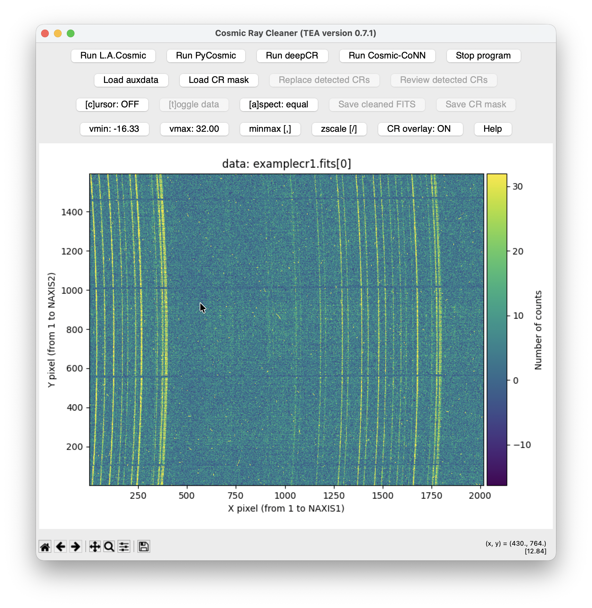
Note
When a character appears in brackets in the text of any button in the
tea-cleanest graphical interface, that key serves as a keyboard shortcut
for the corresponding button. This is especially useful in the Review Cosmic Rays window (see below), where users can quickly clean cosmic rays without
moving the mouse to click buttons.
The most convenient way to work with tea-cleanest is to first search for
pixels suspected of being affected by cosmic rays. This can be done by running
any of the available detection algorithms: L.A.Cosmic, PyCosmic, deepCR,
or Cosmic-CoNN. To do so, simply press the corresponding Run <method>
button in the upper button row.
Run L.A.Cosmic#
After pressing the Run L.A.Cosmic button, a new window opens, allowing you to
define the parameters to be used.
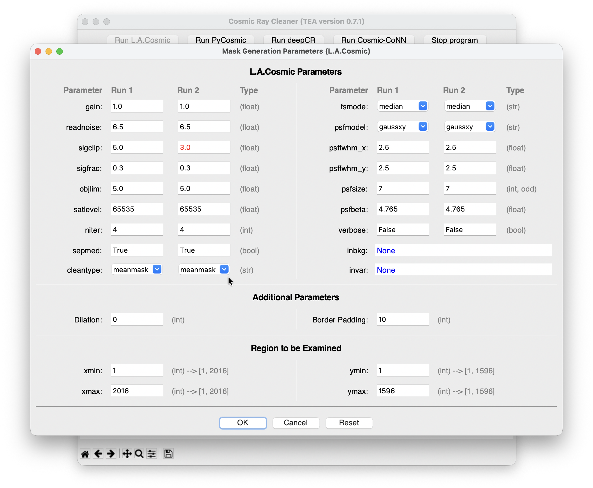
The window is divided into three parameter blocks:
L.A.Cosmic Parameters: This section displays the parameters used by the
cosmicray_lacosmic()function. Note that each parameter appears in two columns: Run 1 and Run 2. The algorithm runs twice: in Run 1, a set of parameters identifies pixels that most clearly appear to be affected by cosmic rays. In Run 2, some parameters can be modified to detect pixels with weaker cosmic-ray signals. Although this second pass may generate many false positives, tea-cleanest only adds Run 2 pixels to the cosmic-ray mask if they lie in the neighborhood of Run 1 cosmic-ray pixels.Users should consult the
cosmicray_lacosmic()function documentation provided by the ccdproc package.Additional Parameters: Here you can define a dilation factor that surrounds each cosmic-ray pixel with a ring of neighboring pixels, which helps define a more generous region when constructing the cosmic-ray mask. The second parameter, border padding, extends the cleaned image beyond its physical edge, making it easier to detect cosmic-ray pixels located at the image borders. If this padding is zero, the
cosmicray_lacosmic()function cannot detect cosmic-ray pixels at the edges.Region to be examined: Here you can define an arbitrary rectangular region in which to search for cosmic-ray pixels. By default, the entire image is examined.
After clicking the OK button, tea-cleanest runs L.A.Cosmic twice and displays the detected cosmic-ray pixels in the main window, overlaid with red markers.
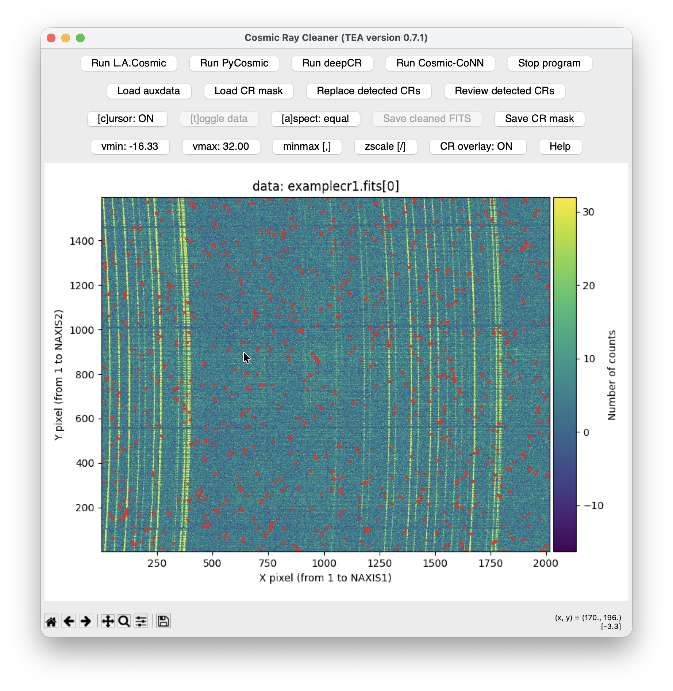
Note
The detected pixels are grouped into cosmic rays, each consisting of one or more connected pixels.
At this point, you can choose to automatically clean all detected cosmic rays
by selecting the Replace detected CRs button, or perform an individual
analysis of each cosmic ray. For individual analysis, you can sequentially
review all detected cosmic rays by clicking the Review detected CRs button,
or you can click on the image to examine the cosmic ray closest to the cursor
position. If no cosmic ray is near the cursor, the program will display the
region around the brightest point in the image.
Automatic Cleaning of the Detected CRs#
If you choose to click the Replace detected CRs button, the program will
display a new Cleaning Parameters window that allows you to define the
interpolation method for replacing the signal in cosmic-ray pixels.
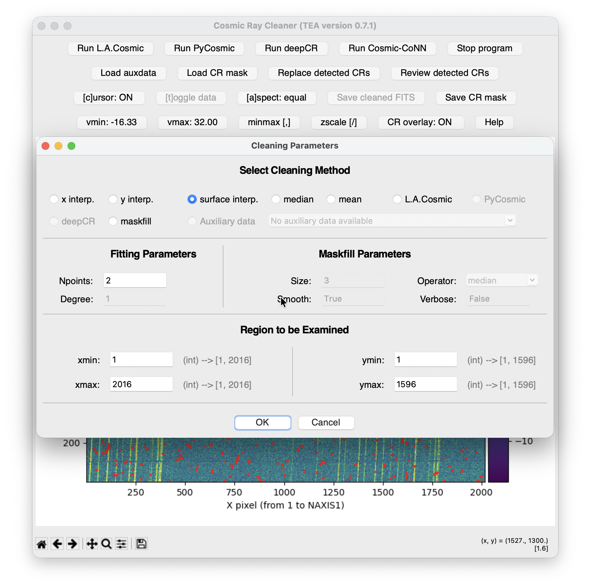
The window is divided into four sections:
Select Cleaning Method: Here you can choose to interpolate along the X-axis (
x_interp.), the Y-axis (y_interp.), fit a plane (surface_interp.), or replace the affected pixels using themean,median, the values computed by L.A.Cosmic (lacosmic), or the result computed by themaskfillmethod described by [van Dokkum and Pasha, 2024]. Is it also possible to replace the cosmic-ray pixels using the data in any of the auxiliary images (or combination of them), when these data have been loaded (see below).Fitting Parameters: In this section, you can define the number of points to use in the neighborhood of the cosmic ray (to the right, left, or around it, depending on the chosen method) and the degree of the polynomial to use (for interpolations along X or Y).
Maskfill Parameters: Here are the four parameters relevant to the maskfill algorithm. It is recommended to consult the maskfill website and the
maskfill()function documentation.Region to be Examined: The rectangular region in which the interpolation of cosmic-ray pixels will be applied.
After choosing, for example, [s]urface interp., the program displays the
progress of the cosmic-ray interpolation through a window showing the relevant
execution times.
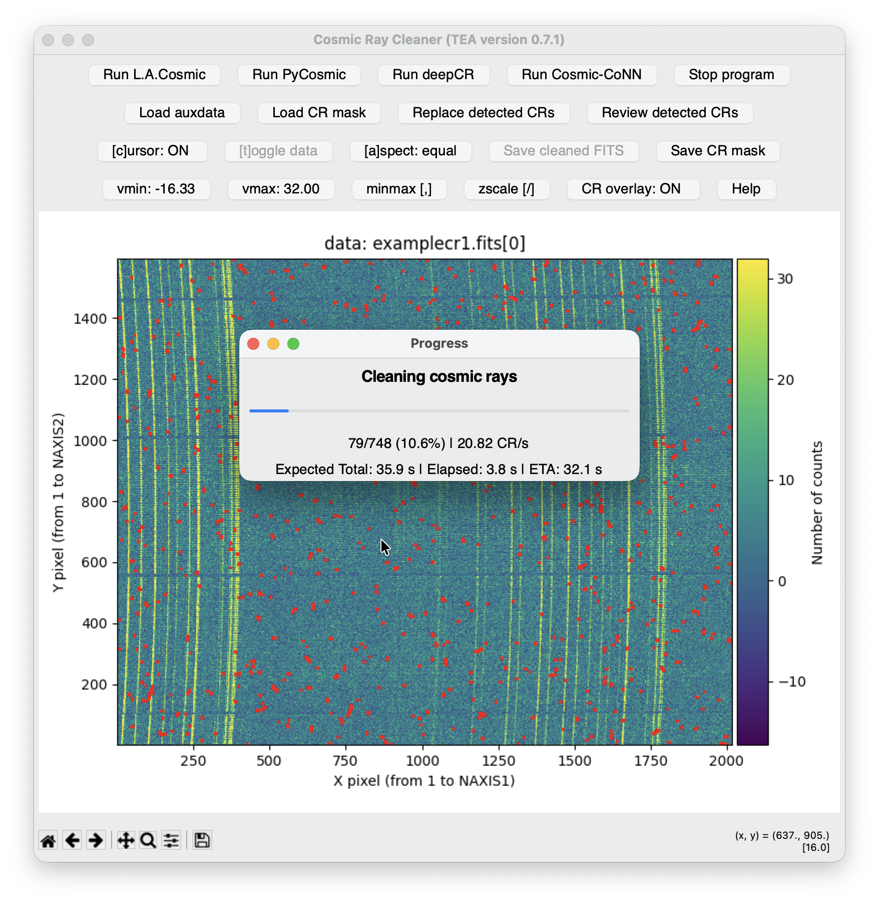
At the end of the interpolation process, a window appears showing a summary of the results.
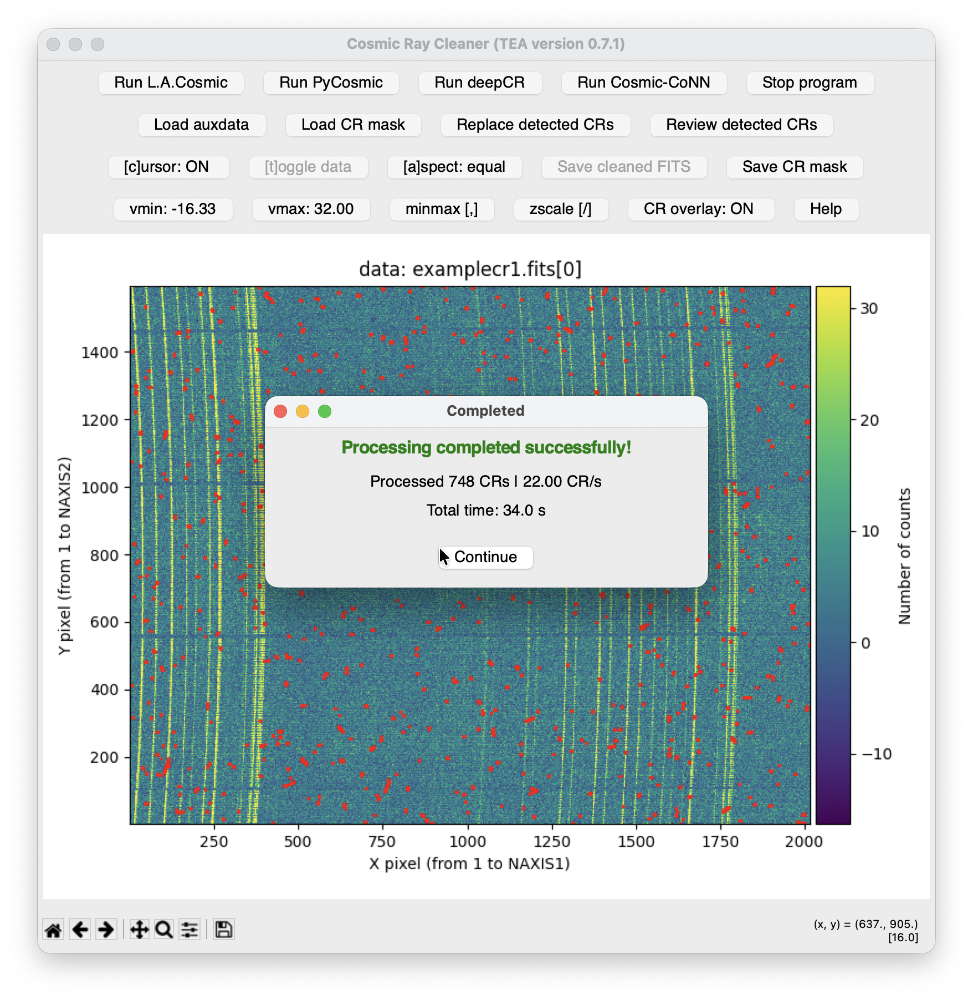
After closing this window, the cosmic-ray-cleaned image is displayed.
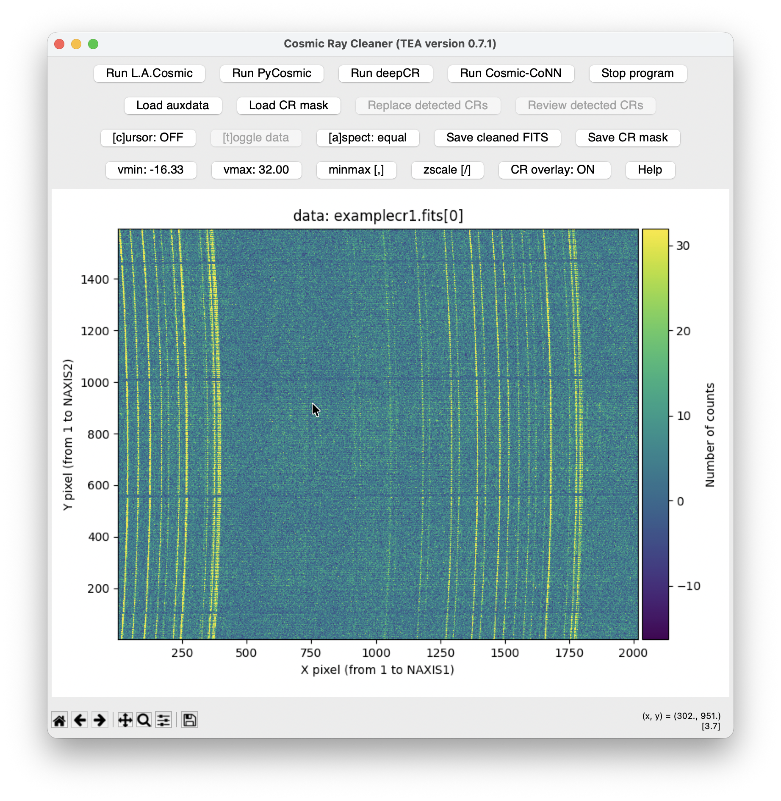
Note
After performing the cosmic-ray cleaning, remember to save the result by
clicking the Save cleaned FITS button in the main window.
Important: The saved image will contain the same extensions as the original
image, with the cleaned image stored in the same extension specified when
reading the original file. In addition, tea-cleanest adds an extra FITS
extension called CRMASK, which contains a mask of the interpolated pixels.
This mask contains only two values: 0 (unmodified pixels) and 1 (pixels
interpolated during cosmic-ray correction).
Alternatively, by clicking the Save CR mask button, you can save a FITS file
containing only the binary mask indicating the pixels detected as cosmic rays
(the FITS file contains only the primary extension with that array).
Manual cleaning of the detected CRs#
If you choose the Review detected CRs button in the main window instead of
automatic cleaning, the program displays a new Review Cosmic Rays window
where you can sequentially review the detected cosmic rays and, based on the
preselected affected pixels in each case, make appropriate modifications before
applying the desired interpolation method.
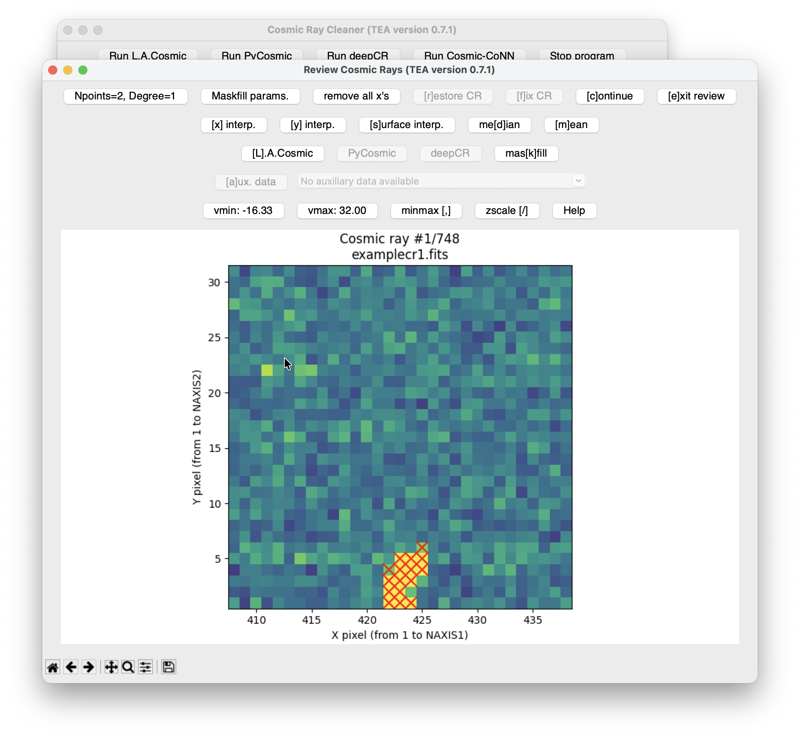
In this window, the selected cosmic ray is displayed with each suspected pixel marked with a red X. You can then mark or unmark suspected pixels using the mouse. Interpolation can be performed using any of the following methods:
[x] interp.: one-dimensional interpolation along the X-axis[y] interp.: one-dimensional interpolation along the Y-axis[s]urface interp.: 2D interpolation using a plane (degree 1)me[d]ian: replacement with a constant value: the median of the pixels surrounding the cosmic ray[m]ean: replacement with the mean value[L].A.Cosmic,PyCosmic, ordeepCR: the values determined by L.A.Cosmic, PyCosmic, or deepCR (only the option corresponding to the detection method used will be available)mas[k]fill: the values computed using the maskfill method described by [van Dokkum and Pasha, 2024][a]ux. data: the values present in any of the auxiliary images or a combination of them (available only if auxiliary images have been loaded)
Before moving on to the next cosmic ray, you can undo the performed
interpolation using the [r]estore CR data button. Once you move to a new
cosmic ray, it is no longer possible to return to previous ones.
The top-left button allows you to modify the number of neighboring points used
in the interpolation, as well as the polynomial degree (for [x] interp. and
[y] interp. cases). Similarly, the Maskfill params. button allows you to
modify the four parameters employed by the maskfill algorithm.
If in the example shown you choose to replace the affected pixels with a plane
fit (by clicking the [s]urface interp. button), the result is as shown below.
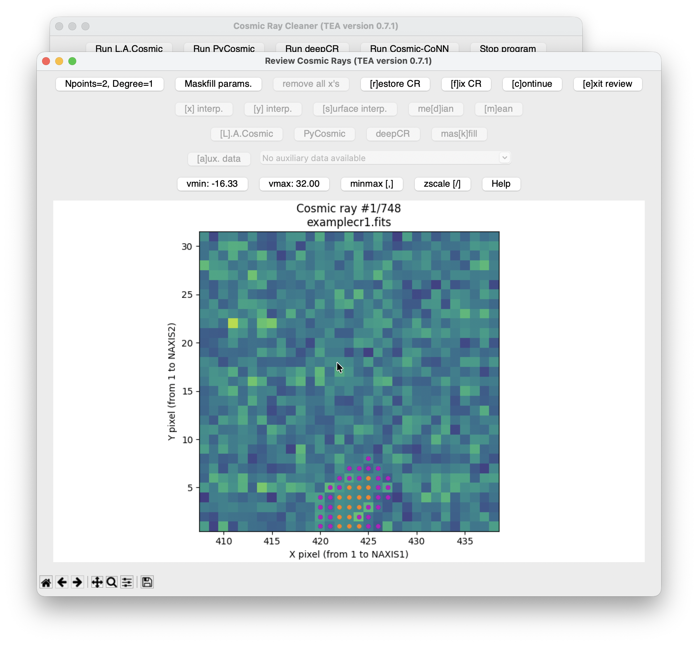
In this image, the pixels used for the plane fit are shown with superimposed filled magenta circles, while the interpolated pixels are indicated with filled orange circles.
If you need to apply different interpolation strategies to clean a particular
cosmic ray feature, you can apply them sequentially by clicking the [f]ix CR
button after each interpolation. Note that in this case the interpolated data
is permanently fixed and the [r]estore CR button will only undo new
interpolations back to the last fixed result.
Clicking the [c]ontinue button allows you to proceed to the next detected
cosmic ray. You can exit the cleaning sequence at any time by clicking the
[e]xit review button.
Warning
Although you can directly start selecting pixels to interpolate in the main
window by first activating the cursor (clicking the [c]ursor OFF button,
which should change to [c]ursor ON) and then clicking on a suspected pixel in
the main window with the mouse, doing this without first running L.A.Cosmic has
the drawback that tea-cleanest will only show a single pixel as a
preselection for interpolation in the Review Cosmic Rays window. For this
reason, it is more convenient to run L.A.Cosmic beforehand to generate a mask
of suspected pixels, so that tea-cleanest preselects all neighboring pixels
likely affected by the same cosmic ray.
Alternatively, you can use the Load CR mask button in the main window to load
a cosmic-ray mask from a FITS image (0: pixels not affected by cosmic rays; 1:
pixels affected by cosmic rays; the image extension must have BITPIX equal to 8
or 16). A dilation factor can be applied to this mask. Once loaded, the
affected pixels are regrouped into cosmic rays, and their removal can proceed
using either of the two methods described above: Replace detected CRs or
Review detected CRs.
Run PyCosmic#
Similar to the previous case, after clicking the Run PyCosmic button in the
main window, a new window opens showing the parameters to be configured for
running this algorithm.
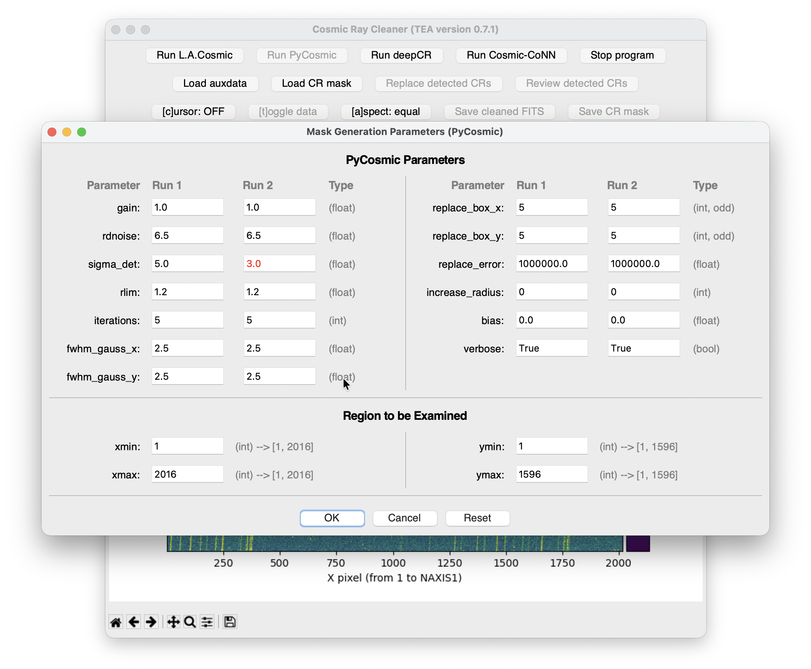
Once the cosmic-ray pixels have been detected, the procedure for their interpolation is the same as that described for the L.A.Cosmic algorithm.
Run deepCR#
After clicking Run deepCR, the program will display some dialog windows
asking for the probability threshold to consider a pixel as a cosmic ray (for
Run 1 and Run 2) and an optional dilation factor (default zero).
Once the cosmic-ray pixels have been detected, the procedure for their interpolation is the same as that described for the L.A.Cosmic algorithm.
Run Cosmic-CoNN#
After clicking Run Cosmic-CoNN, the program will display some dialog windows
asking for the probability threshold to consider a pixel as a cosmic ray (for
Run 1 and Run 2) and an optional dilation factor (default zero).
Once the cosmic-ray pixels have been detected, the procedure for their interpolation is the same as that described for the L.A.Cosmic algorithm.
Advanced Execution (Multiple Equivalent Exposures)#
In the case of having two or more equivalent exposures, you can use one as the main image to be cleaned of cosmic rays and the rest as auxiliary images (whose information can be used to replace the cosmic-ray pixels in the main image). After cleaning the first image, the procedure can be repeated by swapping the roles of the available exposures, so that in the end you obtain a cosmic-ray-cleaned version of each original exposure, which can then be combined as needed.
Download the two additional sample files examplecr2.fits and examplecr3.fits. If you have not already done so, also download the first sample file examplecr1.fits.
(venv_tea) $ tea-cleanest examplecr1.fits --auxfile "examplecr?.fits[0]"
The wildcard ? in the filename pattern matches examplecr1.fits,
examplecr2.fits, and examplecr3.fits, loading all of them as auxiliary
images. The extension can be provided between brackets (the default is the
primary extension; in this example it is not necessary).
You can also provide a comma-separated list of FITS files (each specifying a particular extension). When several files are defined as auxiliary images, the entire list should be enclosed in quotes to prevent misinterpretation by the command line shell.
The auxiliary images can be loaded directly when starting tea-cleanest (as
shown in the previous command line), or they can be read from any FITS file
during program execution by using the Load auxdata button in the main window.
Note
In this example we are using 3 exposures as auxiliary images, including the image we intend to clean. This can be useful, for example, when using the median combination of the 3 exposures to remove cosmic-ray pixels. For slightly more sophisticated work, particularly when dealing with long-exposure images with many cosmic-ray hits, have a look at numina-crmasks.
Running L.A.Cosmic is done in the same way as previously explained. However,
when using the Replace detected CRs button, an additional option now appears
among the available interpolation methods: Auxiliary data (this method is
only available when auxiliary images are loaded). Choosing this interpolation
method causes tea-cleanest to activate a combobox from which you can
replace the detected cosmic-ray pixels using information from one of the
following options:
a particular auxiliary image
the mean of all the auxiliary images
the median of all the auxiliary images
the minimum of all the auxiliary images
(The last three options are only available when the number of auxiliary images is larger than 1.)
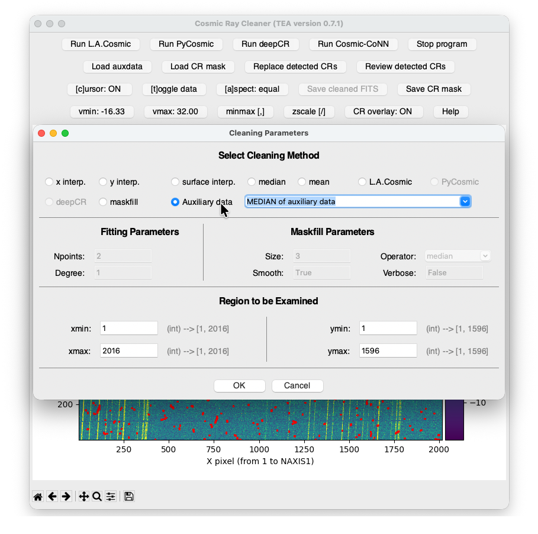
On the other hand, if you choose the Review detected CRs option, the
[a]uxiliary data button will be active in the Review Cosmic Rays window,
providing access to interpolation by replacing the pixels with the signal from
the selected auxiliary image (or combination of auxiliary images).
Additionally, this window simultaneously displays the image to be corrected
(left panel) and the chosen auxiliary data (right panel).
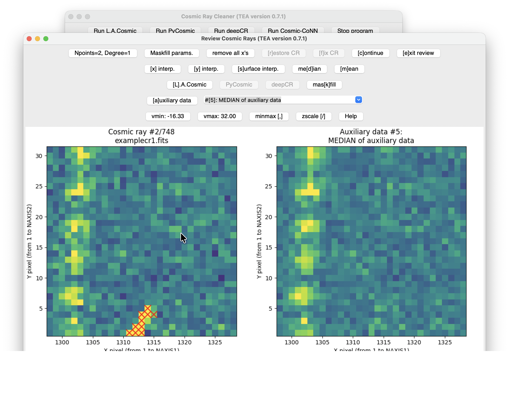
To facilitate the quick display of the different auxiliary images (and their combinations), note that the combobox displaying the different options shows that each potential auxiliary data source has an associated integer number in brackets:
{kind=link}
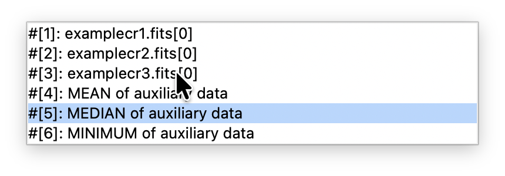
You can quickly blink between auxiliary images by pressing the corresponding
number on the keyboard (valid for the first 9 items in the list). Once you have
selected the desired auxiliary data, press the [a]uxiliary data button to
perform the replacement of the marked pixels. The result of this action is
displayed in the following figure.
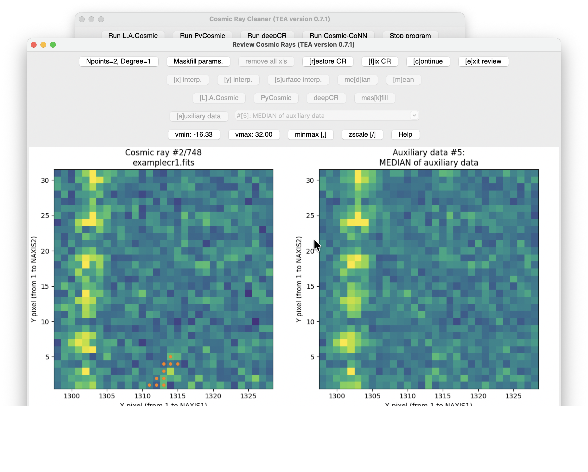
Note that in this case, information from neighboring pixels is not used for the previously selected pixels for interpolation (filled orange circles are shown, but no filled magenta circles).
Using the Functionality Programmatically#
It is possible to use part of the functionality provided by tea-cleanest programmatically from Python code, which is convenient if you need to automate the workflow or work from a Jupyter notebook. See section Interactive use of cleanest functionality.